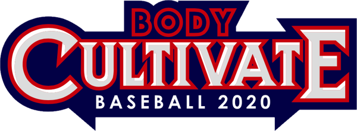

SPINE & SWING PLANE
スイングバックは、立っていたバット（グリップよりヘッドが上）が両肩ラインまで落ちる動作なので、必ずダウンです。問題はその先。スイングの面は脊柱に直角なので、脊柱が地面と垂直なら面は水平で、スイングアウトにダウンフェイズは生まれません。ストライクゾーンを打つには脊柱を傾けるしかありません。股関節屈曲のまま下半身の回旋が入り、頭の位置を保つと、結果として側屈が生まれます。そのとき面は傾き、スイングアウトまでは必ずダウンフェイズになります。ドラッグで視点を回せます。

体修塾の理論では、スイングフロントまでダウンフェイズを続けることも、フロントを地面と平行に維持することもできます。ヘッドを上げるフェイズはありません。上がるのはフォローで、それは結果です。
この図の解説（当たらない／先っぽの引っ掛けの直し方）はnote記事に。前面・後面、トップハンド後面・ボトムハンド後面の話は「打撃の本質」で書いています。
この図の解説記事を読む（note・有料）→ 前面・後面の話「打撃の本質」→図の著作権は体修塾BCAにあります。有料読者の方の指導での使用は自由です。転載・再配布はご遠慮ください。